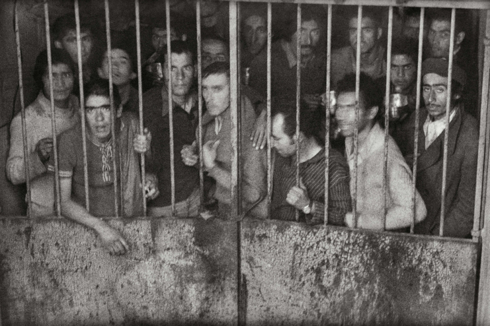
Discursos de amenaza, seguridad y límites del Estado en Chile
¿El nuevo enemigo interno?
Adriana Paccha · Andrés Lazcano
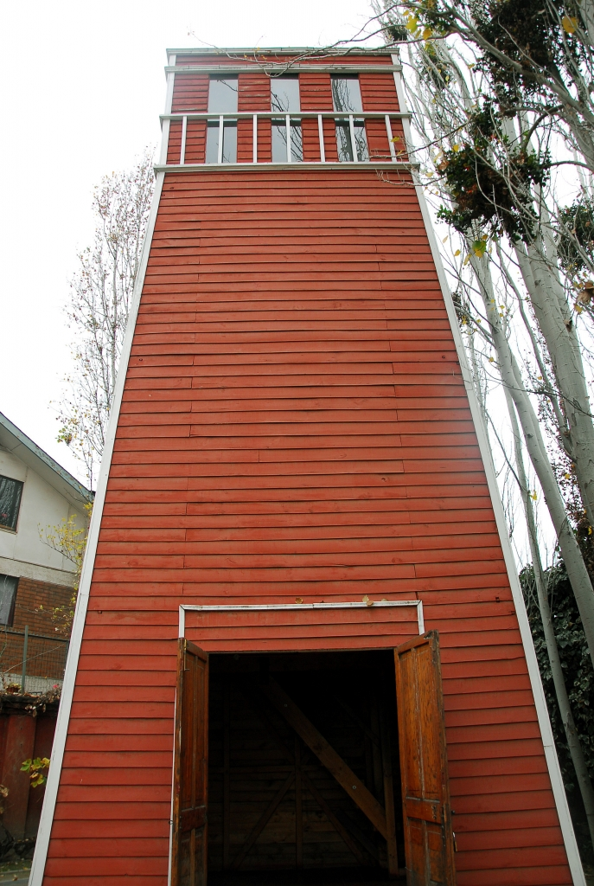
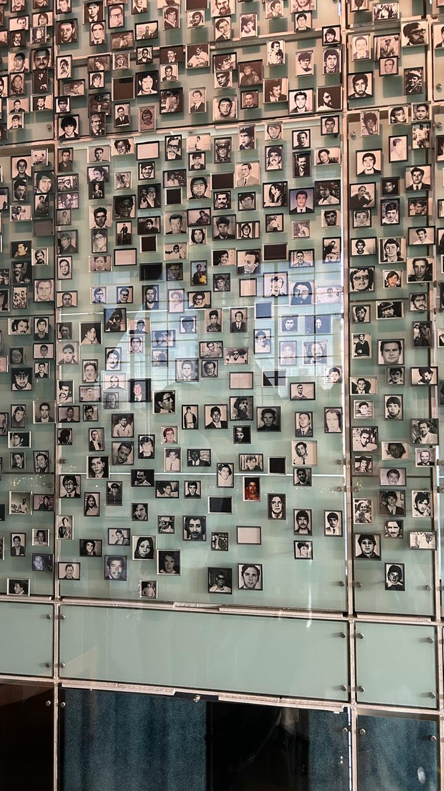
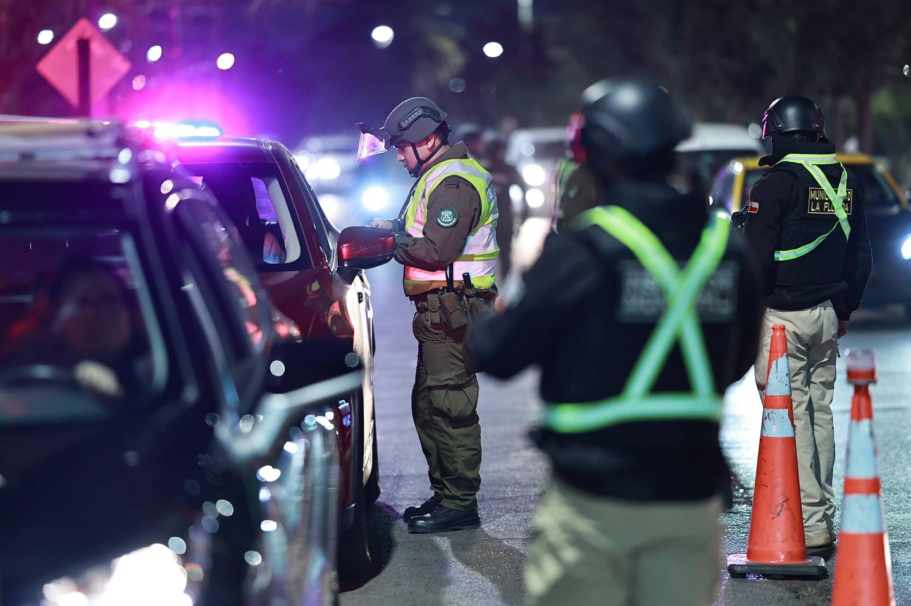
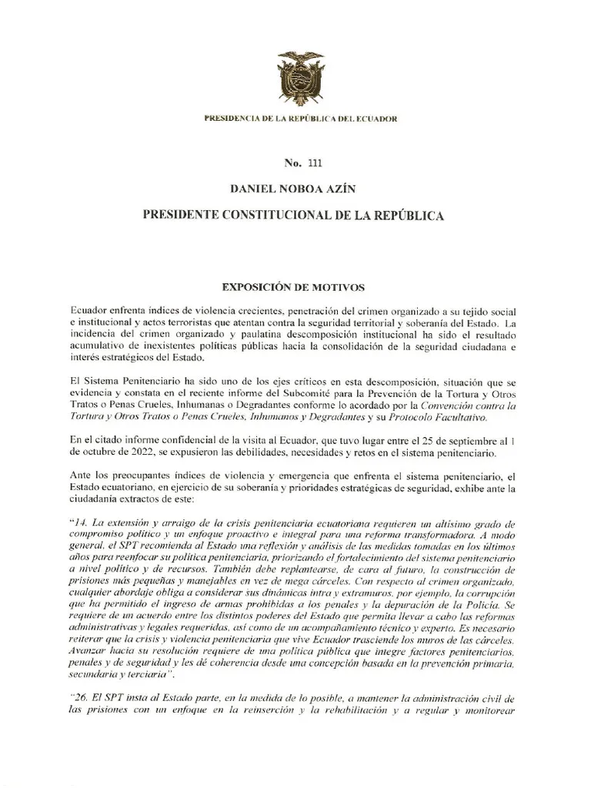
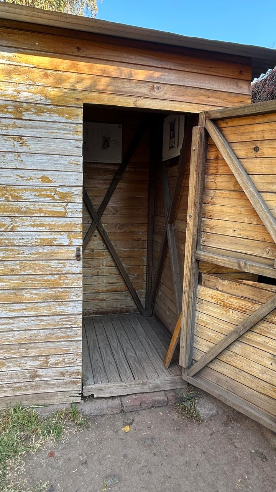
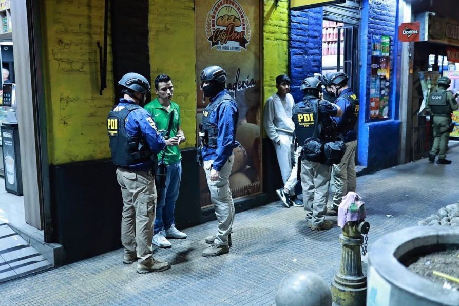
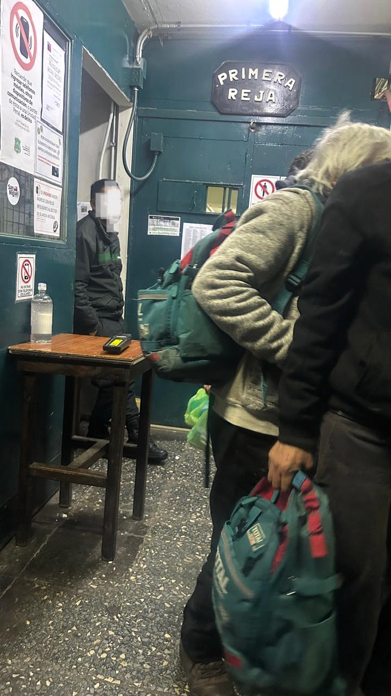








Antes de que el enemigo sea encerrado, debe ser nombrado.
La palabra no quedó en el discurso.
Quienes fueron señalados como enemigos pasaron a ser perseguidos, detenidos y encerrados.
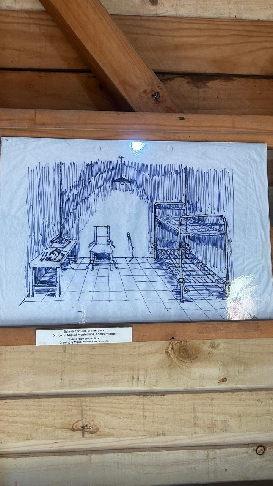
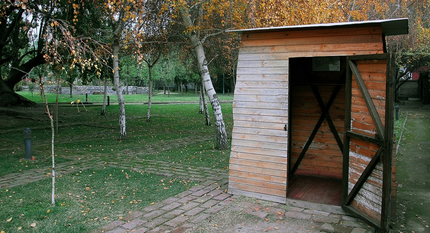
El enemigo deja de ser una palabra.
Ahora tiene un rostro.
La fuerza también necesita una explicación.
Cuando alguien es presentado como una amenaza, actuar contra él puede empezar a parecer necesario.
Nombrar al otro como una amenaza también puede cambiar lo que parece aceptable hacer contra él.
Décadas después, el contexto es otro.
En octubre de 2019, Chile atravesaba una fuerte crisis social. En medio del estallido social, episodios de violencia y destrucción, y bajo estado de emergencia, el gobierno recurrió a las Fuerzas Armadas para apoyar el control del orden público.
Pero vuelve a aparecer una pregunta conocida: ¿qué puede hacer el Estado frente a quienes presenta como una amenaza?
Cuando una amenaza se presenta como cada vez más grave, también puede ampliarse aquello que parece necesario hacer para enfrentarla.
La amenaza no queda solo en el discurso: se traduce en formas concretas de intervención estatal.
El problema no es que el Estado busque garantizar seguridad. La pregunta es qué límites mantiene cuando lo hace.
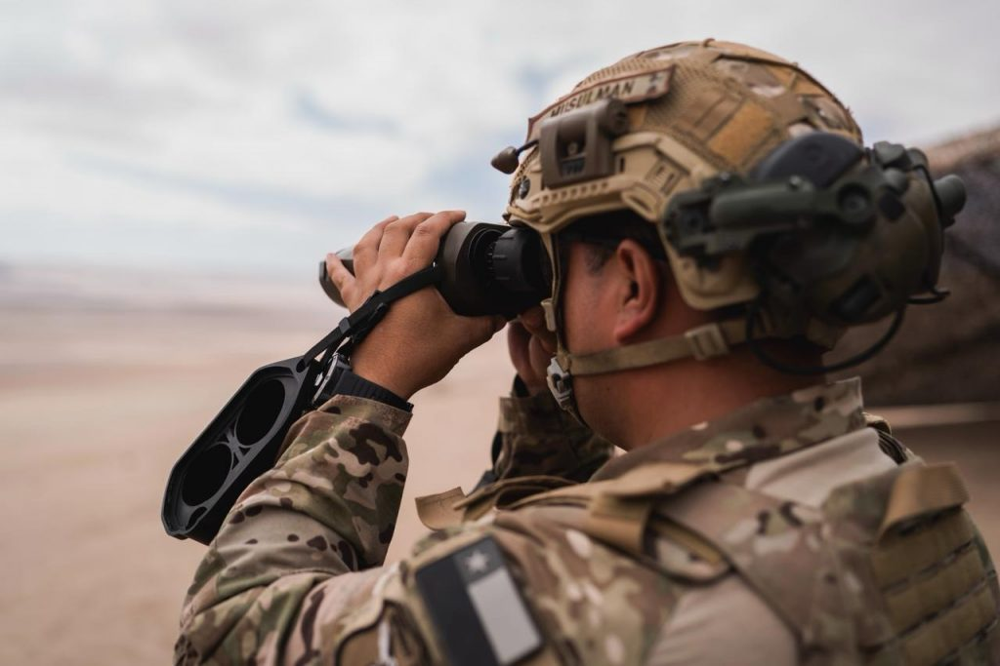
¿Sobre quién recae el control?
Las políticas de seguridad no actúan sobre una idea abstracta. Actúan sobre personas, barrios y territorios concretos.
El control no recae sobre todos de la misma manera.
La seguridad busca proteger. Pero también debemos preguntar quién queda bajo vigilancia para producir esa protección.
Ecuador declaró la existencia de un conflicto armado interno mediante el Decreto Ejecutivo N.º 111 y dispuso la intervención de las Fuerzas Armadas frente a las organizaciones criminales identificadas como terroristas.
Una amenaza definida de manera amplia puede extender el control más allá de quienes se busca perseguir.
En diciembre de 2024, cuatro niños del sector de Las Malvinas, en Guayaquil, fueron detenidos por una patrulla militar.
La Corte Constitucional determinó posteriormente que Josué, Ismael, Steven y Nehemías fueron privados de libertad de forma ilegal, arbitraria e ilegítima por patrullas militares, y declaró, en el ámbito constitucional, que fueron víctimas de desaparición forzada.
El problema del control no es solamente cuánto se amplía, sino también sobre quién puede terminar recayendo.
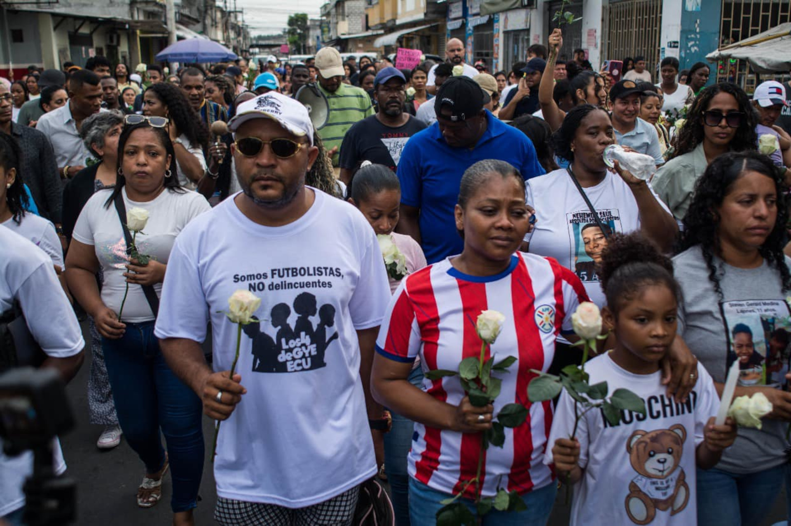
Recordar no significa decir que el presente sea igual al pasado.
Hay experiencias que sobreviven porque alguien pudo contarlas.
Camión civil sacando cuerpos para hacerlos desaparecer. Dibujo de Miguel Montecinos, sobreviviente de Villa Grimaldi. Fotografía propia, Parque por la Paz Villa Grimaldi, 2026.
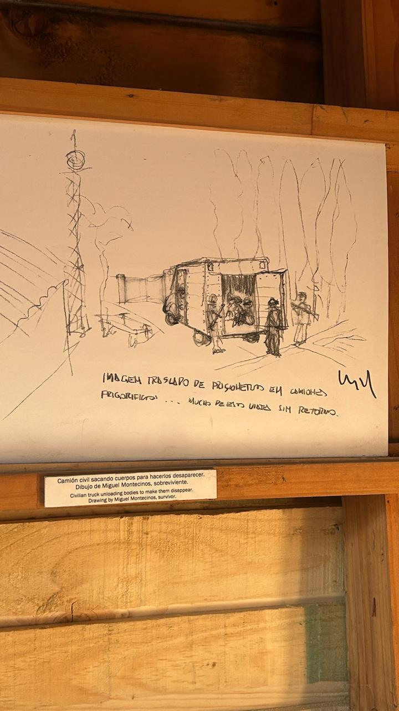
La memoria también devuelve nombres y rostros.
Y hace visibles las ausencias que permanecen.
Los lugares también conservan aquello que ocurrió.
Cada espacio reconstruido vuelve a hacer las mismas preguntas.
Interior reconstruido. Parque por la Paz Villa Grimaldi. Fotografía propia, 2026.
Pero recordar el pasado también obliga a mirar cómo ejercemos el control en el presente.
¿Cuánto control estamos dispuestos a aceptar para sentirnos seguros?
¿Dónde está el límite?
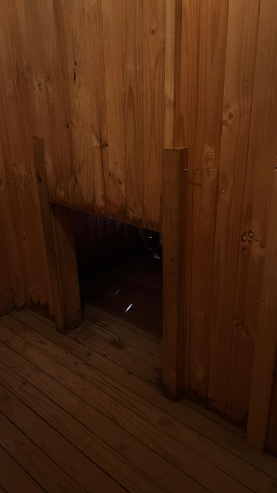
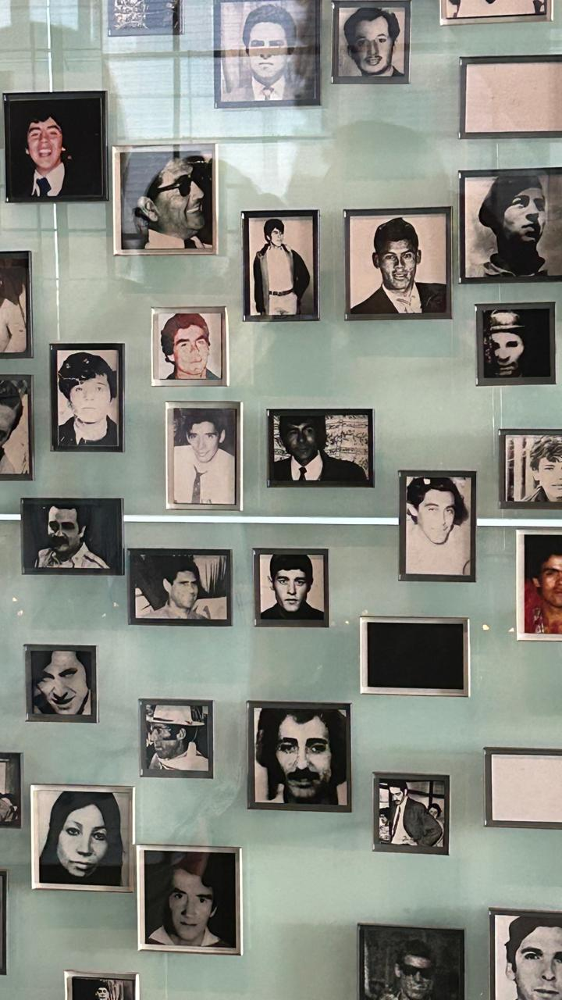
Esta es una propuesta audiovisual desarrollada para el curso Trabajo de Campo y Actualidad, en el marco del Magíster en Ciencias Sociales, mención Sociología de la Modernización, Universidad de Chile.
Adriana Paccha · Andrés Lazcano — 2026